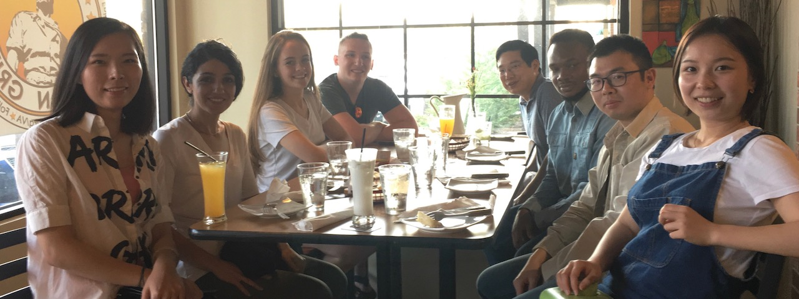

I am an assistant professor in the Tufts University Department of Computer Science and the Data Intensive Studies Center. I investigate machine learning with a special focus on incorporating human knowledge into algorithms to make them more reliable, efficient, and fair.
A note for prospective students.
My research group investigates machine learning for complex phenomena. Our research addresses challenges inherent in the modeling of the connected world. We focus on a balance of theoretical analysis, algorithm development, and applied research to advance knowledge on the entire spectrum of machine learning science.

Woodbury Transformations for Deep Generative Flows
You Lu, Bert Huang. Advances in Neural Information Processing Systems (NeurIPS).
arXiv Preprint (Stay tuned for a camera-ready update.)
Attention-Based Graph Evolution
Shuangfei Fan, Bert Huang. Pacific-Asia Conference on Knowledge Discovery and Data Mining (PAKDD).
Paper
Structured Output Learning with Conditional Generative Flows
You Lu, Bert Huang. AAAI Conference on Artificial Intelligence.
arXiv
Preconditions for Guardianship Interventions in Cyberbullying: Incident Interpretation, Collective and Automated Efficacy, and Relative Popularity of Bullies
Leanna Ireland, James Hawdon, Bert Huang, Anthony Peguero. Computers in Human Behavior.
Paper
Machine Learning Approach For The Objective Sonographic Assessment Of Patellar Tendons In Collegiate Basketball Athletes
Carrie Cheung, You Lu, Al Kozar, Mary Mitchell, Jacob Turnbull, Bert Huang, Vincent Wang. Biomedical Engineering Society Annual Meeting.
Woodbury Transformations for Deep Generative Flows
You Lu, Bert Huang. ICML Workshop on Invertible Neural Networks, Normalizing Flows, and Explicit Likelihood Models.
Paper, Spotlight Talk.
Machine Learning Applications in Orthopaedic Imaging
Vincent Wang, Carrie Cheung, Albert Kozar, Bert Huang. Journal of the American Academy of Orthopaedic Surgeons.
Publisher Link
Adversarial Label Learning
Chidubem Arachie, Bert Huang. AAAI Conference on Artificial Intelligence.
Paper, Code.
Block Belief Propagation for Parameter Learning in Markov Random Fields
You Lu, Zhiyuan Liu, Bert Huang. AAAI Conference on Artificial Intelligence.
arXiv
Reduced-Bias Co-Trained Ensembles for Weakly Supervised Cyberbullying Detection
Elaheh Raisi, Bert Huang. International Conference on Computational Data and Social Networks (CSoNet).
Preprint. Best Paper Runner Up.
Structured Output Learning with Conditional Generative Flows
You Lu, Bert Huang. ICML Workshop on Invertible Neural Networks and Normalizing Flows.
Paper, Poster
Deep Generative Models for Generating Labeled Graphs
Shuangfei Fan, Bert Huang. ICLR Workshop on Deep Generative Models for Highly Structured Data.
Paper
Conditional Labeled Graph Generation with GANs
Shuangfei Fan, Bert Huang. ICLR Workshop on Representation Learning on Graphs and Manifolds.
Paper
Best-Choice Edge Grafting for Efficient Structure Learning of Markov Random Fields
Walid Chaabene, Bert Huang. IEEE International Conference on Big Data.
Paper, Slides
Weakly Supervised Cyberbullying Detection using Co-trained Ensembles of Embedding Models
Elaheh Raisi, Bert Huang. IEEE/ACM International Conference on Social Networks Analysis and Mining (ASONAM).
Paper.
Sparse-Matrix Belief Propagation
Reid Bixler, Bert Huang. Conference on Uncertainty in Artificial Intelligence.
Paper, code.
Recurrent Collective Classification
Shuangfei Fan, Bert Huang. Knowledge and Information Systems.
Springer Online First Link
Weakly Supervised Cyberbullying Detection with Participant-Vocabulary Consistency
Elaheh Raisi, Bert Huang. Social Network Analysis and Mining.
Publisher
Link,
Preprint
Weak Supervision and Machine Learning for Online Harassment Detection
Bert Huang, Elaheh Raisi. Book Chapter in Online Harassment. Editor: Jennifer Golbeck. Pages 5–28. Springer.
Publisher Link
An Adversarial Labeling Game for Learning from Weak Supervision
Chidubem Arachie, Bert Huang. NeurIPS Workshop on Smooth Games Optimization.
Paper.
On the Need for Fairness in Financial Recommendation Engines
Sirui Yao, Bert Huang. NeurIPS Workshop Challenges and Opportunities for AI in Finance.
Paper
Adversarial Learning for Weak Supervision
Chidubem Arachie, Bert Huang. Black in Artificial Intelligence Workshop.
Using Hierarchical Clustering and Hoeffding Sampling to Label an Unlabeled Dataset
Alyssa Herbst, Bert Huang. Women in Machine Learning Workshop.
What Aspects of Training Data Affect Recommendation Unfairness
Sirui Yao, Bert Huang. Women in Machine Learning Workshop.
Integrating Machine Learning to Improve Optimal Estimation of Atmospheric Composition
Bert Huang, Chidubem Arachie, Elena Spinei, Natalya Kramarova, Krzystof Wargan. NASA Goddard Workshop on Artificial Intelligence.
Machine Learning of a Priori Information in Optimal Estimation of Atmospheric Composition
Yun Dong, Bert Huang, Chidubem Arachie, Elena Spinei, Natalya Kramarova, Krzystof Wargan. American Geophysical Union (AGU) Fall Meeting.
Machine Learning Approaches for Automated Detection of Cyberviolence
Elaheh Raisi, Leanna Ireland, Bert Huang, James Hawdon, Anthony Peguero. Southern Sociological Society Annual Meeting.
Establishing a Virtual Social Laboratory for Investigating Cyberviolence
Bert Huang, Anthony Peguero, James Hawdon. Southern Sociological Society Annual Meeting.
The Detection of Patellar Tendinopathy Using Machine Learning Analysis of Ultrasound Images
Ellen Hammet, Grady Iliff, S. Rezvani, Bert Huang, Albert Kozar, Vincent Wang. Orthopaedic Research Society Annual Meeting.
A Weakly Supervised Deep Model for Cyberbullying Detection
Elaheh Raisi, Bert Huang. Women in Machine Learning Workshop.
Fairness and Accuracy in Recommendation with Imbalanced Data Sparsity
Sirui Yao, Bert Huang. Women in Machine Learning Workshop.
Co-trained Ensemble Models for Weakly Supervised Cyberbullying Detection
Elaheh Raisi, Bert Huang. NeurIPS 2017 Workshop on Learning with Limited Labeled Data: Weak Supervision and Beyond. Best Paper Award.
Paper, Poster.
Beyond Parity: Fairness Objectives for Collaborative Filtering
Sirui Yao, Bert Huang. Advances in Neural Information Processing Systems (NeurIPS).
Paper,
Video
Cyberbullying Detection with Weakly Supervised Machine Learning
Elaheh Raisi, Bert Huang. IEEE/ACM International Conference on Advances in Social Network Analysis and Mining (ASONAM)
Preprint. Best Paper Prize.
New Fairness Metrics for Recommendation that Embrace Differences
Sirui Yao, Bert Huang. Workshop on Fairness, Accountabilty, and Transparency in Machine Learning (FATML), KDD 2017 Workshop.
arXiv
Online Edge Grafting for Efficient MRF Structure Learning
Walid Chaabene, Bert Huang.
arXiv
Recurrent Collective Classification
Shuangfei Fan, Bert Huang. International Conference on Network Science (NetSci) and Satellite Symposium on Machine Learning in Network Science 2017.
Abstract
Detecting Cyber Bullying: But Can it Be Stopped?
Robbie Harris, WVTF Public Radio Interview.
Radio Interview
Virginia Tech professor builds algorithm to detect traces of cyberbullying
Izzy Rossi, News Editor, Collegiate Times.
Press Article
Dispelling five common myths about cyberbullying
Ceci Leonard, Media Relations, Virginia Tech.
Press Article
A Weakly Supervised Approach for Adaptive Detection of Cyberbullying Roles
Bert Huang. Workshop on Computational Methods for CyberSafety. Invited talk.
Abstract
Training Iterative Collective Classifiers with Back-Propagation
Shuangfei Fan, Bert Huang. Workshop on Mining and Learning with Graphs.
Paper
Cyberbullying Identification Using Participant-Vocabulary Consistency
Elaheh Raisi, Bert Huang. #Data4Good: Machine Learning in Social Good Applications. ICML 2016 workshop.
Paper
Stability and Generalization in Structured Prediction
Ben London, Bert Huang, Lise Getoor. Journal of Machine Learning Research. Volume 17.
Preprint
Machine Learning for Detecting Detrimental Online Social Behavior
Bert Huang, Elaheh Raisi. Computing Community Consortium (CCC) Symposium on Computing Research: Addressing National Priorities and Societal Needs.
Video,
Poster,
CCCBlog post
Capturing Planned Protests from Open Source Indicators
Sathappan Muthiah, Bert Huang, Jaime Arredondo, David Mares, Lise Getoor, Graham Katz, Naren Ramakrishnan. Artificial Intelligence Magazine.
Paper
Paired-Dual Learning for Training Hinge-Loss MRFs with Latent Variables
Stephen Bach, Bert Huang, Jordan Boyd-Graber, Lise Getoor. International Conference on Machine Learning (ICML) 2015.
Paper,
Talk
The Benefits of Learning with Strongly Convex Approximate Inference
Ben London, Bert Huang, Lise Getoor. International Conference on Machine Learning (ICML) 2015
Paper,
Talk
Paired-Dual Learning for Circumventing the Inference Bottleneck
Bert Huang. New Perspectives on Relational Learning, Banff International Research Station for Mathematical Innovation and Discovery
Talk
Joint Models of Disagreement and Stance in Online Debate
Dhanya Sridhar, James Foulds, Marilyn Walker, Bert Huang, Lise Getoor. Annual Meeting of the Association for Computational Linguistics (ACL) 2015
Paper
Unifying Local Consistency and MAX SAT Relaxations for Scalable Inference with Rounding Guarantees
Stephen Bach, Bert Huang, Lise Getoor. International Conference on Artificial Intelligence and Statistics (AISTATS) 2015
Paper
Planned Protest Modeling in News and Social Media
Sathappan Muthiah, Bert Huang, Jaime Arredondo, David Mares, Lise Getoor, Graham Katz, Naren Ramakrishnan. Conference on Innovative Applications of Artificial Intelligence (IAAI) 2015.
Deployed Application Award.
Paper
Network-Based Drug-Target Interaction Prediction with Probabilistic Soft Logic
Shobeir Fakhraei, Bert Huang, Louiqa Raschid, Lise Getoor. IEEE/ACM Transactions on Computational Biology and Bioinformatics.
Paper
Discovering Evolving Political Vocabulary in Social Media
Aravindan Mahendiran, Wei Wang, Jaime Arredondo, Bert Huang, Lise Getoor, David Mares, Naren Ramakrishnan. International Conference on Behavioral, Economic, and Socio-Cultural
Computing (BESC) 2014.
Paper
“Beating the News” With EMBERS: Forecasting Civil Unrest Using Open Source Indicators
Naren Ramakrishnan, Patric Butler, Nathan Self, Rupinder Khandpur,
Parang Saraf, Wei Wang, Jose Cadena, Anil Vullikanti, Gizem Korkmaz,
Chris Kuhlman, Achla Marathe, Liang Zhao, Hua Ting, Feng Chen, Chang-Tien Lu,
Bert Huang, Aravind Srinivasan, Khoa Trinh, Lise Getoor, Graham Katz, Andy Doyle, Chris Ackermann, Ilya Zavorin,
Jim Ford, Kristen Summers, Youssef Fayed, Jaime Arredondo, Dipak Gupta, David Mares.
ACM SIGKDD Conference on Knowledge Discovery and Data Mining (KDD) 2014.
Paper
Learning Latent Engagement Patterns of Students in Online Courses
Arti Ramesh, Dan Goldwasser, Bert Huang, Hal Daumé III, Lise Getoor. AAAI Conference on Artificial Intelligence 2014.
Paper
PAC-Bayesian Collective Stability
Ben London, Bert Huang, and Lise Getoor. International Conference on Artificial Intelligence and Statistics (AISTATS) 2014.
Paper
Rounding Guarantees for Message-Passing MAP Inference with Logical Dependencies
Stephen Bach, Bert Huang, Lise Getoor. NeurIPS Workshop on Discrete and Combinatorial Problems in Machine Learning (DISCML) 2014.
Paper
On the Strong Convexity of Variational Inference
Ben London, Bert Huang, Lise Getoor. NeurIPS Workshop on Advances in Variational Inference 2014.
Paper
Collective Classification of Stance and Disagreement in Online Debate Forums
Dhanya Sridhar, James Foulds, Bert Huang, Marilyn Walker, Lise Getoor. Bay Area Machine Learning Symposium 2014.
Paper
Probabilistic Soft Logic for Social Good
Stephen Bach, Bert Huang, Lise Getoor. KDD Workshop on Data Science for Social Good 2014.
Paper
Understanding MOOC Discussion Forums using Seeded LDA
Arti Ramesh, Dan Goldwasser, Bert Huang, Hal Daumé III, Lise Getoor. ACL Workshop on Innovative Use of NLP for Building Educational Applications, 2014.
Paper
Uncovering Hidden Engagement Patterns for Predicting Learner Performance in MOOCs
Arti Ramesh, Dan Goldwasser, Bert Huang, H. Daumé III, Lise Getoor. ACM Conference on Learning at Scale, Works-in-Progress Track. 2014.
Paper
A Hypergraph-Partitioned Vertex Programming Approach for Large-Scale Consensus Optimization.
Hui Miao, Xiangyang Liu, Bert Huang, Lise Getoor. IEEE International Conference on Big Data, 2013.
Paper
Hinge-Loss Markov Random Fields: Convex Inference for Structured Prediction
Stephen Bach, Bert Huang, Ben London, Lise Getoor. Conference on Uncertainty in Artificial Intelligence (UAI) 2013.
Paper
Collective Stability in Structured Prediction: Generalization from One Example
Ben London, Bert Huang, Ben Taskar, Lise Getoor. International Conference on Machine Learning (ICML) 2013. Oral presentation.
Paper
A Flexible Framework for Probabilistic Models of Social Trust
Bert Huang, Angelika Kimmig, Lise Getoor, Jennifer Golbeck. International Conference on Social Computing, Behavioral-Cultural Modeling, and Prediction (SBP)
2013.
Paper
Large-Margin Structured Learning for Link Ranking
Stephen Bach, Bert Huang, Lise Getoor. NeurIPS Workshop on Frontiers of Network Analysis 2013. Best Student Paper Award.
Paper
Modeling Learner Engagement in MOOCs using Probabilistic Soft Logic
Arti Ramesh, Dan Goldwasser, Bert Huang, Hal Daumé III, Lise Getoor. NeurIPS Workshop on Data Driven Education 2013.
Paper
PAC-Bayes Generalization Bounds for Randomized Structured Prediction
Ben London, Bert Huang, Ben Taskar, Lise Getoor. NeurIPS Workshop on Perturbation, Optimization, and Statistics 2013.
Paper
Collective Inference and Multi-Relational Learning for Drug-Target Interaction Prediction
Shobeir Fakhraei, Bert Huang, Lise Getoor. NeurIPS Workshop on Machine Learning in Computational Biology 2013
Fairness in Assignment Markets with Dual Decomposition
Bert Huang. ICML Workshop on Peer Review and Publishing Models 2013.
Paper
Empirical Analysis of Collective Stability
Bert Huang, Ben London, Ben Taskar, Lise Getoor. ICML Workshop on Structured Learning 2013
Paper
Collective Activity Detection using Hinge-Loss Markov Random Fields
Ben London, Sameh Khamis, Stephen Bach, Bert Huang, Lise Getoor, Larry Davis. CVPR Workshop on Structured Prediction 2013
Paper
Learning Latent Groups with Hinge-Loss Markov Random Fields
Stephen Bach, Bert Huang, Lise Getoor. ICML Workshop on Interactions between Inference and Learning (Inferning) 2013
Paper
Graph-Based Generalization Bounds for Learning Binary Relations
Ben London, Bert Huang, and Lise Getoor.
arXiv
Multi-Relational Learning Using Weighted Tensor Decomposition with Modular Loss
Ben London, Thodoris Rekatsinas, Bert Huang, and Lise Getoor.
arXiv
Social Group Modeling with Probabilistic Soft Logic
Bert Huang, Stephen Bach, Eric Norris, Jay Pujara, and Lise Getoor. NeurIPS 2012 Workshop on Social Network and Social Media Analysis: Methods, Models, and
Applications.
Paper
Improved Generalization Bounds for Large-Scale Structured Prediction
Ben London, Bert Huang, and Lise Getoor. NeurIPS 2012 Workshop on Algorithmic and Statistical Approaches for Large Social Networks.
Paper
Multi-Relational Weighted Tensor Decomposition
Ben London, T. Rekatsinas, Bert Huang, and Lise Getoor. NeurIPS 2012 Workshop on Spectral Learning.
Paper
A Short Introduction to Probabilistic Soft Logic
Angelika Kimmig, Stephen Bach, Matthias Broecheler, Bert Huang, and Lise Getoor. NeurIPS 2012 Workshop on Probabilistic Programming: Foundations and Applications. Oral
presentation
Paper
Probabilistic Soft Logic for Trust Analysis in Social Networks
Bert Huang, Angelika Kimmig, Lise Getoor, and J. Golbeck. International Workshop on Statistical Relational Artificial Intelligence (StaRAI). UAI 2012
workshop.
Paper and
slides
Query-Driven Active Surveying for Collective Classification
Galileo Namata, Ben London, Lise Getoor, and Bert Huang. International Conference on Machine Learning 2012 Workshop: Mining and Learning with Graphs (MLG). Oral
presentation
Paper
Semantic Model Vectors for Complex Video Event Recognition
Michele Merler, Bert Huang, Lexing Xie, Gang Hua, and Apostol Natsev. IEEE Transactions on Multimedia, Vol. 14, No. 1, February 2012.
Preprint
Machine Learning for the New York City Power Grid
Cynthia Rudin, David Waltz, Roger Anderson, Albert Boulanger, Ansaf Salleb-Aouissi, Maggie Chow,
Haimonti Dutta, Philip Gross, Bert Huang, Steve Ierome, Delfina Isaac, Arthur Kressner, Rebecca Passonneau, Axinia
Radeva, and Leon Wu. IEEE Transactions on Pattern Analysis and Machine Intelligence. February 2012.
Preprint
Learning a Distance Metric from a Network
Blake Shaw, Bert Huang, and Tony Jebara. Neural Information Processing Systems (NeurIPS) 2011.
Paper,
appendix, and
poster
Learning a Degree-Augmented Distance Metric from a Network
Bert Huang, Blake Shaw, and Tony Jebara. Beyond Mahalanobis: Supervised Large-Scale Learning of Similarity. NeurIPS 2011 workshop. Oral presentation
Paper
and
slides
Learning with Degree-Based Subgraph Estimation
Bert Huang
Ph.D. Dissertation. Columbia University
Thesis
Network Prediction with Degree Distributional Metric Learning
Bert Huang, Blake Shaw, and Tony Jebara. Interdisciplinary Workshop on Information and Decision in Social Networks (WIDS 2011).
abstract
Fast b-Matching via Sufficient Selection Belief Propagation
Bert Huang and Tony Jebara. International Conference on Artificial Intelligence and Statistics (AISTATS) 2011.
Paper,
code,
poster, and
clarification.
Collaborative Filtering via Rating Concentration
Bert Huang and Tony Jebara. International Conference on Artificial Intelligence and Statistics (AISTATS) 2010.
Paper,
code archive, and
poster
Learning with Subgraph Estimation and Degree Priors
Bert Huang and Tony Jebara. New York Academy of Sciences Machine Learning Symposium, November 2009.
Paper
Exact Graph Structure Estimation with Degree Priors
Bert Huang and Tony Jebara. International Conference on Machine Learning and Applications (ICMLA) 2009.
Paper
Alive on Back-Feed Culprit Identification via Machine Learning
Bert Huang, Ansaf Salleb-Aouissi, and Philip Gross. International Conference on Machine Learning and Applications (ICMLA) 2009. Special
Session on Machine
Learning in Energy Applications.
Paper
Discovering Characterization Rules from Rankings
Ansaf Salleb-Aouissi, Bert Huang, and David Waltz. International Conference on Machine Learning and Applications (ICMLA) 2009.
Paper
Maximum Entropy Density Estimation with Incomplete Presence-Only Data
Bert Huang and Ansaf Salleb-Aouissi. International Conference on Artificial Intelligence and Statistics (AISTATS) 2009.
Paper and
poster
Approximating the Permanent with Belief Propagation
Bert Huang and Tony Jebara. Columbia University Technical Report. 2009
arXiv and
code archive
Maximum Likelihood Graph Structure Estimation with Degree Distributions
Bert Huang and Tony Jebara. Analyzing Graphs: Theory and Applications, NeurIPS Workshop, December 2008.
Paper
Vers des Machines a Vecteurs de Support "Actionables": Une Approche Fondee sur le Classement. (Toward Actionable Support Vector Machines: A Ranking Based Approach)
Ansaf Salleb-Aouissi, Bert
Huang, and
David Waltz. Knowledge Extraction and Management (Extraction et Gestion des Connaissances) EGC 2008, Sophia Antipolis, France. Best Paper Award.
Approximating the Permanent with Belief Propagation
Bert Huang and Tony Jebara. New York Academy of Sciences Machine Learning Symposium 2007.
abstract
Maximum Entropy Density Estimation with Incomplete Data
Bert Huang and Ansaf Salleb-Aouissi. New York Academy of Sciences Machine Learning Symposium 2007.
Poster and abstract.
Loopy Belief Propagation for Bipartite Maximum Weight b-Matching
Bert Huang and Tony Jebara. International Conference on Artificial Intelligence and Statistics (AISTATS) 2007. Oral presentation.
Paper and code.
Loopy Belief Propagation for Bipartite Maximum Weight b-Matching
Bert Huang and Tony Jebara. New York Academy of Sciences Machine Learning Symposium 2006.
Poster and abstract.
spouterprod.c. A useful mex utility to compute sparse outer products in matlab, taking advantage in computation time and memory usage when you are interested in computing
something
like mask.*(U*V'), where mask is a sparse binary matrix.
Some projects on github.
Machine Learning with Limited Annotation, Spring 2021
From Basic Modeling to Deep Learning in PyTorch, Fall 2020
Challenges of Fairness in Machine Learning, Fall 2020
Advanced Machine Learning, Fall 2019
Introduction to Artificial Intelligence, Fall 2018
Optimization in Machine Learning, Spring 2018
Data Analytics II, Spring 2017
Introduction to Artificial Intelligence, Fall 2016
Probabilistic Graphical Models and Structured Prediction, Spring 2016
Introduction to Artificial Intelligence, Spring 2015
Link Mining, Spring 2012 (Co-instructed with Lise Getoor)
Objected Oriented Programming and Design in Java, Spring 2010
Data Structures in Java, Fall 2009
Data Structures and Algorithms, Spring 2009
Introduction to Computer Science and Programming in C, Fall 2008
Please feel free to use these materials for educational purposes, but do not sell the content on these course websites for profit.
When I have free time, I try my best to be a musician. Lately, this is mostly manifested by my playing guitar to entertain my pet budgie.
In graduate school, I created a few recordings experimenting with the electronic instruments built into Apple GarageBand for iPad, which can be streamed from my SoundCloud page.
In my early high school years, I arranged a number of electronic pieces. Later, in high school and college, I explored combining my electronic songs with real voice and instrument recordings (here is a small subset).
During graduate school, I earned a brown belt studying with the Columbia University Tae Kwon Do Club.